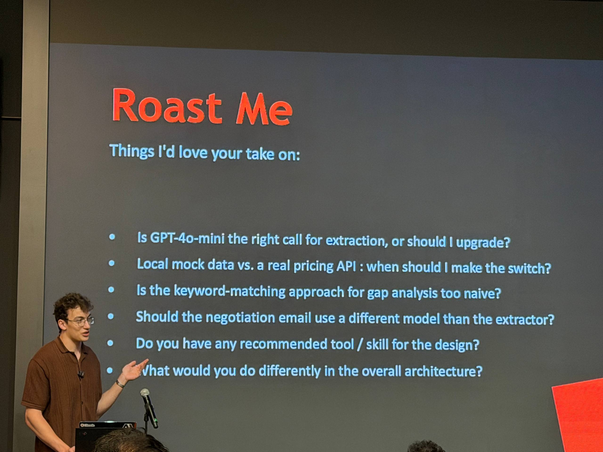
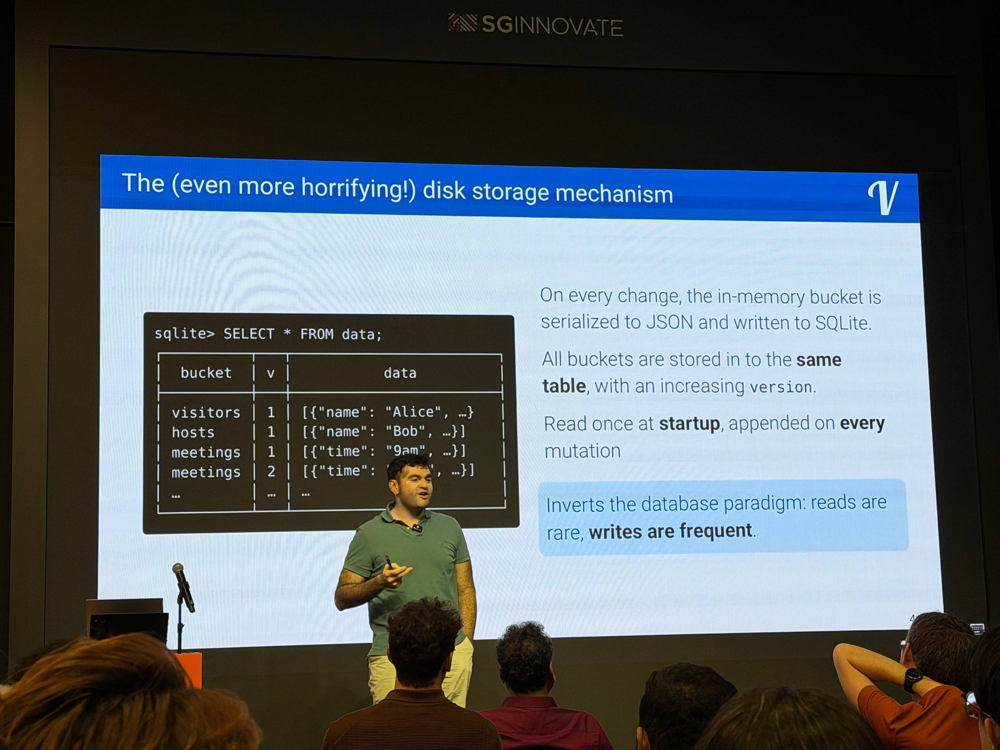
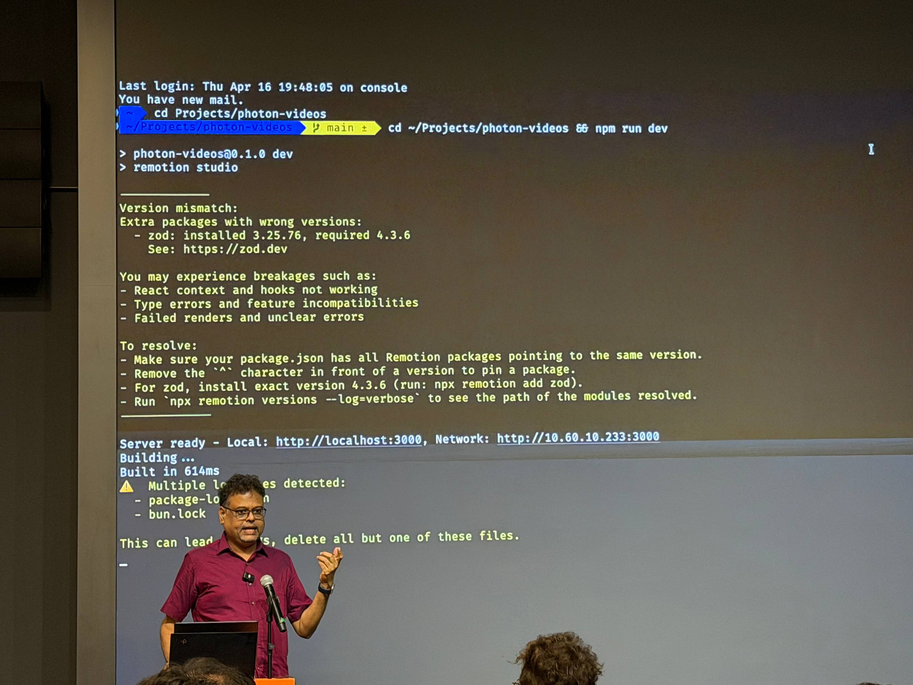
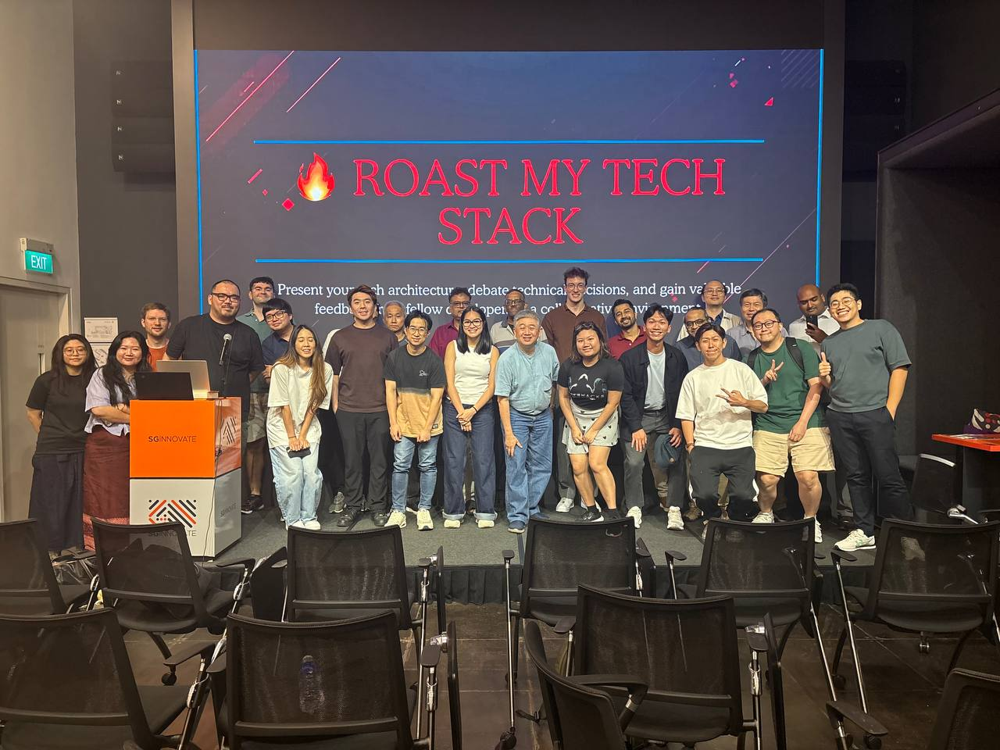
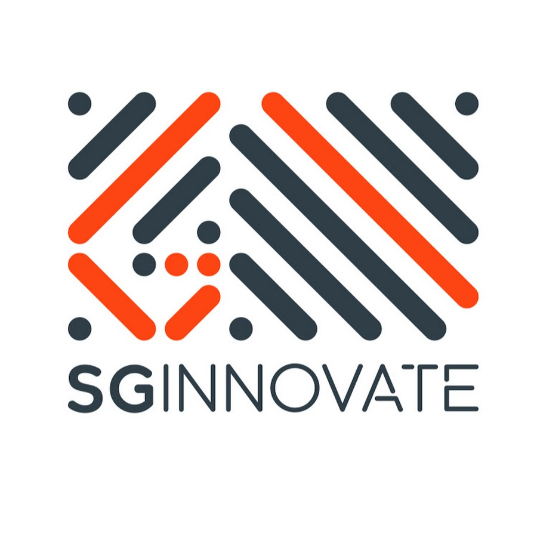

Roast #3 · April 17, 2026 · Singapore
Three builders brought three very different stacks: a pricing copilot that parses PDFs, the counter-intuitive storage structure behind Visigoth.ai, and a programmatic video toolchain. This recap preserves the practical decisions, trade-offs, and questions raised in the room.
Speaker 01
01
Ways To Parse PDFs To Markdown
- Image-heavy PDFs: extract into
a.mdformat with Docling. - Text-based PDFs: extract into
a.mdwith MarkItDown (Microsoft). - Python alternative: pdfplumber.
02
Deterministic Over Dynamic For Numbers
Use deterministic code for numeric analysis — less flexibility, but you keep a clean audit trail. And don't do a real-time API call if you can help it: pre-compute and cache instead.
03
Be Selective With Models
Pick a different model per task: use gpt-4o mini for categorization and simpler work, and a more conversational model to handle negotiation and distill negotiation style. Consider shadcn for ease of UI design.
Speaker 02

01
If You Should Switch To A Relational DB
The audience showed two paths: adopt DuckDB for analytical workloads, or handle idempotent writes in Postgres with upsert / on conflict patterns.
02
Mimics Functional Programming
The strength of this approach is that it mimics functional programming — data flows through pure steps instead of mutating in place. Which raises the natural question: why not use a functional language for the whole stack?
For the API layer, build with FastAPI instead of rolling your own with Flask — notably more maintainable.
03
Off The Critical Path
A key speedup: the disk write happens off the critical path, so there's no user-visible latency. This only works because everything is immutable — once written, nothing needs to overwrite or coordinate on the same bytes.
Speaker 03

01
The Toolchain
- Remotion — build and render programmatic videos using React code.
- Voicebox — a local tool that clones your own voice for personalized audio.
- FFmpeg — the versatile framework to decode, encode, and process video and audio files.
- Google Gemma — lightweight, open models capable of video summarization tasks.

Venue sponsor

SGInnovate
PIC: An Ting
Event ops volunteers